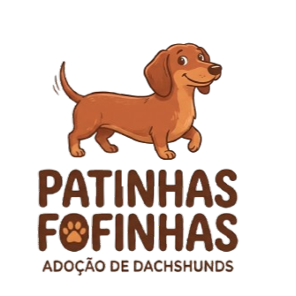

Todo dachshund merece um lar
A Patinhas Fofinhas é um projeto de adoção dedicado aos dachshunds, os salsichinhas. Cuidamos de cães resgatados e abandonados, com atendimento veterinário, vacinas e castração, e procuramos famílias preparadas para recebê-los. O dachshund tem corpo comprido, coluna delicada e um coração enorme: por isso conversamos com cada candidato e acompanhamos o cão depois da adoção. Faça login e saiba como adotar, doar ou apadrinhar um dachshund.